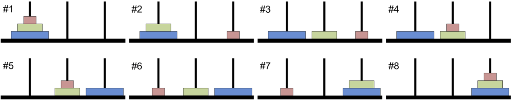

This notebook contains an excerpt from the An Introduction To Python Programming And Numerical Methods For Scientists and Engineers; the content is available on GitHub.
The text is released under the CC-BY-NC-ND license, and code is released under the MIT license. If you find this content useful, please consider supporting the work by buying the book!
< 6.1 Recursive Functions | Contents | 6.3 Summary and Problems >
Divide and Conquer¶
Divide and conquer is a useful strategy for solving difficult problems. Using divide and conquer, difficult problems are solved from solutions to many similar easy problems. In this way, difficult problems are broken up so they are more manageable. In this section, we cover two classical examples of divide and conquer: the Towers of Hanoi Problem and the Quicksort algorithm.
Towers of Hanoi¶
The Towers of Hanoi problem consists of three vertical rods, or towers, and N disks of different sizes, each with a hole in the center so that the rod can slide through it. The disks are originally stacked on one of the towers in order of descending size (i.e., the largest disc is on the bottom). The goal of the problem is to move all the disks to a different rod while complying with the following three rules:
Only one disk can be moved at a time.
Only the disk at the top of a stack may be moved.
A disk may not be placed on top of a smaller disk.
The following figure shows the steps of the solution to the Tower of Hanoi problem with three disks.

A legend goes that a group of Indian monks are in a monastery working to complete a Towers of Hanoi problem with 64 disks. When they complete the problem, the world will end. Fortunately, the number of moves required is \(2^{64} − 1\) so even if they could move one disk per millisecond, it would take over 584 million years for them to finish.
The key to the Towers of Hanoi problem is breaking it down into smaller, easier-to-manage problems that we will refer to as subproblems. For this problem, it is relatively easy to see that moving a disk is easy (which has only three rules) but moving a tower is difficult (we cannot immediately see how to do it). So we will assign moving a stack of size N to several subproblems of moving a stack of size N − 1.
Consider a stack of N disks that we wish to move from Tower 1 to Tower 3, and let my_tower(N) move a stack of size N to the desired tower (i.e., display the moves). How to write my_tower may not immediately be clear. However, if we think about the problem in terms of subproblems, we can see that we need to move the top N-1 disks to the middle tower, then the bottom disk to the right tower, and then the N-1 disks on the middle tower to the right tower. my_tower can display the instruction to move disk N, and then make recursive calls to my_tower(N-1) to handle moving the smaller towers. The calls to my_tower(N-1) make recursive calls to my_tower(N-2) and so on. A breakdown of the three steps is depicted in the following figure.

Following is a recursive solution to the Towers of Hanoi problem. Notice its compactness and simplicity. The code exactly reflects our intuition about the recursive nature of the solution: First we move a stack of size N-1 from the original tower ‘from_tower’ to the alternative tower ‘alt_tower’. This is a difficult task, so instead we make a recursive call that will make subsequent recursive calls, but will, in the end, move the stack as desired. Then we move the bottom disk to the target tower ‘to_tower’. Finally, we move the stack of size N-1 to the target tower by making another recursive call.
TRY IT! Use the function my_towers to solve the Towers of Hanoi Problem for N = 3. Verify the solution is correct by inspection.
def my_towers(N, from_tower, to_tower, alt_tower):
"""
Displays the moves required to move a tower of size N from the
'from_tower' to the 'to_tower'.
'from_tower', 'to_tower' and 'alt_tower' are uniquely either
1, 2, or 3 referring to tower 1, tower 2, and tower 3.
"""
if N != 0:
# recursive call that moves N-1 stack from starting tower
# to alternate tower
my_towers(N-1, from_tower, alt_tower, to_tower)
# display to screen movement of bottom disk from starting
# tower to final tower
print("Move disk %d from tower %d to tower %d."\
%(N, from_tower, to_tower))
# recursive call that moves N-1 stack from alternate tower
# to final tower
my_towers(N-1, alt_tower, to_tower, from_tower)
my_towers(3, 1, 3, 2)
Move disk 1 from tower 1 to tower 3.
Move disk 2 from tower 1 to tower 2.
Move disk 1 from tower 3 to tower 2.
Move disk 3 from tower 1 to tower 3.
Move disk 1 from tower 2 to tower 1.
Move disk 2 from tower 2 to tower 3.
Move disk 1 from tower 1 to tower 3.
By using Divide and Conquer, we have solved the Towers of Hanoi problem by making recursive calls to slightly smaller Towers of Hanoi problems that, in turn, make recursive calls to yet smaller Towers of Hanoi problems. Together, the solutions form the solution to the whole problem. The actual work done by a single function call is actually quite small: two recursive calls and moving one disk. In other words, a function call does very little work (moving a disk), and then passes the rest of the work onto other calls, a skill you will probably find very useful throughout your engineering career.
Quicksort¶
An list of numbers, A, is sorted if the elements are arranged in ascending or descending order. Although there are many ways of sorting a list, quicksort is a divide-and-conquer approach that is a very fast algorithm for sorting using a single processor (there are faster algorithms for multiple processors).
The quicksort algorithm starts with the observation that sorting a list is hard, but comparison is easy. So instead of sorting a list, we separate the list by comparing to a pivot. At each recursive call to quicksort, the input list is divided into three parts: elements that are smaller than the pivot, elements that are equal to the pivot, and elements that are larger than the pivot. Then a recursive call to quicksort is made on the two subproblems: the list of elements smaller than the pivot and the list of elements larger than the pivot. Eventually the subproblems are small enough (i.e., list size of length 1 or 0) that sorting the list is trivial.
Consider the following recursive implementation of quicksort.
def my_quicksort(lst):
if len(lst) <= 1:
# list of length 1 is easiest to sort
# because it is already sorted
sorted_list = lst
else:
# select pivot as teh first element of the list
pivot = lst[0]
# initialize lists for bigger and smaller elements
# as well those equal to the pivot
bigger = []
smaller = []
same = []
# loop through list and put elements into appropriate array
for item in lst:
if item > pivot:
bigger.append(item)
elif item < pivot:
smaller.append(item)
else:
same.append(item)
sorted_list = my_quicksort(smaller) + same + my_quicksort(bigger)
return sorted_list
my_quicksort([2, 1, 3, 5, 6, 3, 8, 10])
[1, 2, 3, 3, 5, 6, 8, 10]
Similarly to Towers of Hanoi, we have broken up the problem of sorting (hard) into many comparisons (easy).
< 6.1 Recursive Functions | Contents | 6.3 Summary and Problems >